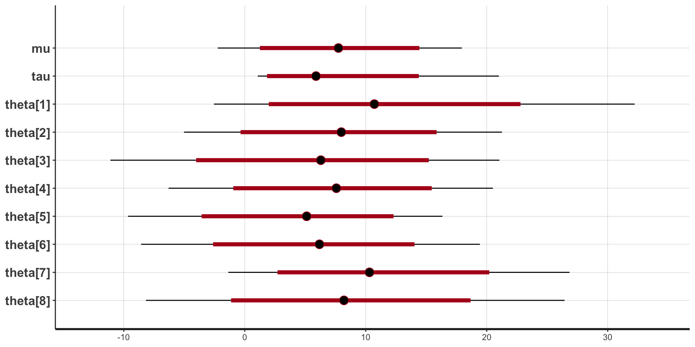

| School | Effect | Std |
|---|---|---|
| A | 28.39 | 14.9 |
| B | 7.94 | 10.2 |
| C | -2.75 | 16.3 |
| D | 6.82 | 11.0 |
| E | -0.64 | 9.4 |
| F | 0.63 | 11.4 |
| G | 18.01 | 10.4 |
| H | 12.16 | 17.6 |
Lecture 01: Course Introduction and Review
Chun-Hao Yang
Syllabus
\[ \newcommand{\mc}[1]{\mathcal{#1}} \newcommand{\R}{\mathbb{R}} \newcommand{\E}{\mathbb{E}} \renewcommand{\P}{\mathbb{P}} \newcommand{\var}{{\rm Var}} % Variance \newcommand{\mse}{{\rm MSE}} % MSE \newcommand{\bias}{{\rm Bias}} % MSE \newcommand{\cov}{{\rm Cov}} % Covariance \newcommand{\iid}{\stackrel{\rm iid}{\sim}} \newcommand{\ind}{\stackrel{\rm ind}{\sim}} \renewcommand{\choose}[2]{\binom{#1}{#2}} % Choose \newcommand{\chooses}[2]{{}_{#1}C_{#2}} % Small choose \newcommand{\cd}{\stackrel{d}{\rightarrow}} \newcommand{\cas}{\stackrel{a.s.}{\rightarrow}} \newcommand{\cp}{\stackrel{p}{\rightarrow}} \newcommand{\bin}{{\rm Bin}} \newcommand{\ber}{{\rm Ber}} \DeclareMathOperator*{\argmax}{argmax} \DeclareMathOperator*{\argmin}{argmin} \]
Course Description
- Statistical analysis is an inversion process: retrieving the causes (models/parameters) from the effects (observations/sample/data)
- Bayes’ Theorem: If \(A\) and \(E\) are events such that \(\P(E) \neq 0\), \[\P(A \mid E)=\frac{\P(E \mid A) \P(A)}{\P(E \mid A) \P(A)+\P\left(E \mid A^c\right) \P\left(A^c\right)}.\]
- Let \(A\) be causes and \(E\) be effects. Bayes’ Theorem gives the relationship between \(\P(A\mid E)\) (statistical inference) and \(\P(E\mid A)\) (phenomenon).
- This course will focus on statistical analysis under the Bayesian paradigm.
Course Description
- Adapting Bayes’ Theorem to a parametric problem,
\[\pi(\theta|x) = \frac{p(x|\theta)\pi(\theta)}{\int p(x|\theta^{\prime})\pi(\theta^{\prime})d\theta^{\prime}}.\]
\[\begin{align*} \theta & \longleftrightarrow \text{parameter}\\ x & \longleftrightarrow \text{data}\\ \pi(\theta) & \longleftrightarrow \textcolor{magenta}{\text{prior distribution}}\\ p(x|\theta) & \longleftrightarrow \text{likelihood/model}\\ \pi(\theta|x) & \longleftrightarrow \textcolor{magenta}{\text{posterior distribution}}\\ \end{align*}\]- Key components: priors and posteriors
Course Description
A general procedure for Bayesian statistical analysis:
- Choose a class \(\mc{M}\) of models for the sample \(x\);
- Choose a prior distribution over \(\mc{M}\);
- Use Bayes Theorem to compute the posterior distribution of models given the sample;
- Pick a “good” model based on the posterior distribution.
Topics
- Principles for the choice of priors
- Inference based on the posterior
- Bayesian analysis for different problems:
- estimation
- hypothesis testing
- regression
- prediction
- nonparametric model
- model comparison
Course Materials
- Hoff, P. D. (2009). A First Course in Bayesian Statistical Methods.
- Robert, C. P. (2007). The Bayesian Choice, 2nd Edition.
- Gelman, A. et al. (2020). Bayesian Data Analysis, 3rd Edition.
- Robert, C. P., & Casella, G. (2004). Monte Carlo Statistical Methods, 2nd Edition.
- Prof. Rebecca Steorts at Duke. Lecture notes
- Slides will be posted on NTU Cool.
Course Schedule
| Week | Date | Topics | Reading |
|---|---|---|---|
| 1 | 9/5 | Introduction & History of Bayes Theorem | |
| 2 | 9/12 | Backbones of Bayesian Analysis; One-parameter Models; Conjugate Priors | Hoff Ch. 1-3, BC Ch. 1 |
| 3 | 9/19 | Prior Information and Prior Distribution | BC Ch. 3 |
| 4 | 9/26 | Decision Theory and Bayesian Estimation | BC Ch. 2, 4 |
| 5 | 10/3 | Connections to non-Bayesian Analysis; Hierarchical Models | BDA Ch. 4, 5 |
| 6 | 10/10 | No class (National Holiday) | |
| 7 | 10/17 | Testing and Model Comparison | BC Ch. 5, 7, BDA Ch. 6, 7 |
| 8 | 10/24 | Project Proposal | |
| 9 | 10/31 | Metropolis-Hastings algorithms; Gibbs sampler | BDA Ch. 10-11 |
| 10 | 11/7 | Hamiltonian Monte Carlo; Variational Inference | BDA Ch. 12-13 |
| 11 | 11/14 | Bayesian regression | BDA Ch. 14 |
| 12 | 11/21 | Generalized Linear Models; Latent Variable Model | BDA Ch. 16, 18 |
| 13 | 11/28 | Empirical Bayes | BC Ch. 10 |
| 14 | 12/5 | Bayesian Nonparametrics | BDA Ch. 21, 23 |
| 15 | 12/12 | Final Project Presentation | |
| 16 | 12/19 | Final Project Presentation |
Grading
- Homework (3 - 4 homeworks): 30%
- Oral Presentation (project proposal and final presentation): 40%
- Written Report: 30%
Contact information
- Office: Room 602, Cosmology Hall
- E-mail: chunhaoy@ntu.edu.tw
- Office Hours: Tue. 3-5pm or by appointment
Final Project
- A group of 2-3 students
- Choose a dataset and find a problem which you can answer with your dataset.
- Figure out how to perform legitimate statistical analysis based on (but not limited to) what we learn in this course.
- An oral presentation of your results (20 mins per group)
- A written report (8 pages) including:
- description of the dataset
- statistical problem
- model and inference
- results and conclusion
- reference
- More details will be announced after midterm exam.
Prerequisites
- Basic calculus and linear algebra
- Mathematical statistics (undergrad level is fine)
- Familiarity with some data analytic programming language (R/Python/MATLAB)
- Experiences with data analysis is not required but will be helpful
Example: 8-school dataset
A study was performed for the ETS to analyze the effects of special coaching programs on SAT scores. Eight schools with their own coaching programs were involved in this study.
Example: 8-school dataset
What can we ask about this dataset?
- Is there any difference between the coaching programs?
- Which program is considered effective?
- Which program is the most effective?
- How much can we expect to improve on the SAT scores after taking the coaching programs?
Step 1 & 2: Determine the likelihood and prior
- Consider \[\begin{align*} Y_{i} \mid \theta_i, \sigma_i^2 & \ind N(\theta_i, \sigma_i^2), i = 1,\ldots, 8\\ \theta_i \mid \mu, \tau & \ind N(\mu, \tau^2) \end{align*}\] where \(Y_i\)’s are the observed average treatment effect and \(\sigma_i^2\)’s are the variance of the treatment effects.
- We are interested in estimating the \(\theta_i\)’s, which are the effects of the coaching programs.
Step 4: Inference based on the posterior
Step 4: Inference based on the posterior
Step 4: Inference based on the posterior
Stan: Statistical Computing Platform

- Provide automated Bayesian computation
- Interface with R/Python/MATLAB/…
A brief history of Bayesian statistics
Who is the father of statistics?
Some important statisticians:
- Carl Friedrich Gauss (1777 - 1855): Gaussian distribution, …
- Ronald A. Fisher (1890 - 1962): likelihood based inference, …
- Karl Pearson (1857 - 1936): Pearson’s correlation coefficient, …
- William Sealy Gosset (1876 - 1937): \(t\)-test and \(t\) distribution
- Jerzy Neyman (1894 - 1981): Neyman-Pearson Lemma, …
- Pierre-Simon Laplace (1749 - 1827): Central Limit Theorem, …
- Thomas Bayes (1702 - 1761): Bayes Theorem, …
Thomas Bayes
- British Reverend Thomas Bayes (1702 - 1761)
- Work on inverse probability problem
- Discover a relationship between causes and observations (1746 - 1749), which is later called Bayes Theorem
- Write “An Essay towards solving a Problem in the Doctrine of Chances”
- His philosopher friend, Richard Price, edited and published his result.
Bayes’ Thought Experiment
Pierre-Simon Laplace
- A French mathematician (1749 - 1827)
- Discover the same rule in 1774, independent of Bayes
- Using conditional probability, write down the rule as \[\begin{align*} \P(A \mid E)=\frac{\P(E \mid A) \P(A)}{\P(E \mid A) \P(A)+\P\left(E \mid A^c\right) \P\left(A^c\right)}. \end{align*}\]
- Propose to use equi-probability as the prior, i.e., the uniform prior

Laplace’s Rule of Succession
- If we repeat an experiment that we know can result in a success or failure, \(n\) times independently, and get \(s\) successes, and \(n-s\) failures, then what is the probability that the next repetition will succeed?
- Laplace’s Answer: \[\P\left(X_{n+1}=1 \mid X_1+\cdots+X_n=s\right)=\frac{s+1}{n+2}\]
- This answer is obtained from the Beta-Binomial model.
Pierre-Simon Laplace
- Laplace was not satisfied with the uniform prior, neither did other mathematicians.
- However, he still applied Bayes Theorem to solve many practical problems:
- Estimating the French population
- Birth and census study
- Credibility of witnesses in the court
- In 1810, he announced the Central Limit Theorem.
- At the age of 62, he turned to frequentist-based approach. Why?
Decline of Bayesian Statistics
- The subjective component, prior distribution, is heavily criticized by mathematicians and theorists.
- For large dataset, Bayesian and frequentist produced almost the same result.
- Dataset became more reliable, and frequentist approaches are easier to implement.
- Bayesian approaches are computationally challenging, even for simple models.
- Researchers tend to design their own experiments to answer industrial/scientific questions.
Sir Ronald A. Fisher
- British Statistician/Mathematician (1890 - 1962)
- Tea and milk experiment
- Father of modern statistics and experimental design
- Problem –> Experiment –> Data –> Analysis
- Develop a collection of statistical methods, e.g., MLE, ANOVA, Fisher information, sufficient statistics, etc.

Revival of Bayesian Statistics
- Clean, reliable data -> Frequentist
- Through the use of prior information, Bayesian approaches are actually more powerful and flexible when handling complex datasets.
- Advances in computing technologies
- Readings:
- Lindley, D. V. (1975). The future of statistics: A Bayesian 21st century. Advances in Applied Probability, 7, 106-115.
- Efron, B. (1986). Why isn’t everyone a Bayesian? The American Statistician, 40(1), 1-5.
- Efron, B. (1998). R. A. Fisher in the 21st century. Statistical Science, 95-114.
What is probability?
- Frequentist: Probability is the limit of relative frequency as the experiment repeats infinitely.
- Bayesian: Probability reflects one’s belief.
- However, it doesn’t matter how you interpret probability because

The Theory That Would Not Die
- For more interesting stories about Bayesian statistics, check
- There is a talk at Google given by the author Sharon McGrayne.
- https://www.lesswrong.com/posts/RTt59BtFLqQbsSiqd/a-history-of-bayes-theorem
Review
Probability
- The value \(\P(E)\) is the probability of the occurrence of event \(E\).
- Let \(\Omega\) be the sample space, i.e., the space containing all possible outcomes.
- A probability \(\P\) on \(\Omega\) satisfies:
- \(\P(\Omega) = 1\)
- \(\P(E) \geq 0\) for any \(E \subset \Omega\)
- (countable additivity) \(\P(\cup_{i=1}^{\infty} E_i) = \sum_{i=1}^\infty \P(E_i)\) for pairwise disjoint \(E_i\)’s
Conditional Probability
- The conditional probability of \(A\) given \(B\) is
\[\P(A \mid B) \coloneqq \frac{\P(A \cap B)}{\P(B)}, \quad \text{if}\;\;\P(B) > 0.\]
- One-line proof of Bayes Theorem: If \(\P(A)\) and \(\P(B)\) are both non-zero,
\[\P(A \mid B) = \frac{\P(A \cap B)}{\P(B)} = \frac{\P(B \mid A)\P(A)}{\P(B)}.\]
Random Variables
- A random variable is
- a measurable function
- an outcome from a random experiment
- The information about a random variable is given by it probability density function (pdf) or probability mass function (pmf).
- pdf: \(f(x) \geq 0\) and \(\int f(x) dx = 1\)
- pmf: \(f(x) = \P(X = x)\) and \(\sum f(x) = 1\)
- Expectation: \(\E(X) = \int xf(x)dx\) or \(\E(X) = \sum x\P(X = x)\)
- Variance: \(\var(X) = \E[(X - \mu)^2] = \E(X^2) - \mu^2\) where \(\mu = \E(X)\).
- Covariance: \(\cov(X, Y) = \E[(X - \mu_X)(Y - \mu_Y)] = \E(XY) - \mu_X\mu_Y\)
Independence
- Independence of events: \(\P(A \cap B) = \P(A)\P(B)\)
- Independent random variables:
- \(\Leftrightarrow\) \(f_{X,Y}(x, y) = f_X(x)f_Y(y)\)
- \(\Rightarrow\) \(\E(XY) = \E(X) \E(Y)\) (the reverse is not true)
- \(\Leftrightarrow\) \(f_{X|Y}(x|y) = f_X(x)\)
- Conditional independence
- \(X \perp Y \mid Z\): given \(Z\), \(X\) and \(Y\) are independent
- Equivalently, \(X \mid Z\) and \(Y \mid Z\) are independent.
- Remark: (mutual) independence DOES NOT imply conditional independence
- Example: \(X, Z \iid \text{Ber}(1/2)\) and \(Y = I(X \neq Z)\). Check that \(X\) and \(Y\) are independent, but they are not conditionally independent given \(Z\).
Law of Total Probability/Expectation/Variance
- Law of Total Probability: For \(B_i \cap B_j = \emptyset\) and \(\cup_{i=1}^k B_i = \Omega\), \[\P(A) = \sum_{i=1}^k \P(A \mid B_i).\]
- Law of Total Expectation (tower property/double expectation): \[\E(X) = \E_Y(\E_{X|Y}(X|Y)).\]
- Law of Total Variance: \[\var(X) = \var(\E(X|Y)) + \E(\var(X|Y)).\]
Important univariate distributions
- Continuous univariate distribution:
- Normal distribution (on \(\R\))
- Gamma distribution (on \(\R_+\))
- Beta distribution (on \([0, 1]\))
- Discrete univariate distribution:
- Binomial distribution (on \(\{0, 1, \ldots, n\}\))
- Poisson distribution (on \(\{0, 1, 2, \ldots\}\))
- Negative Binomial distribution (on \(\{0, 1, 2, \ldots\}\))
Normal Distribution
- \(N(\mu, \sigma^2)\), \(\mu \in \R\), \(\sigma > 0\)
- Density function:
\[f(x;\mu,\sigma^2) = \frac{1}{\sqrt{2\pi}\sigma} \exp\left(-\frac{(x-\mu)^2}{2\sigma^2}\right), \quad x \in \R\]
- \(\E(X) = \mu\) and \(\var(X) = \sigma^2\)
Gamma Distribution
- \(\text{Gamma}(\alpha, \beta)\), \(\alpha, \beta > 0\)
- Density function:
\[f(x;\alpha, \beta) = \frac{\beta^{\alpha}}{\Gamma(\alpha)}x^{\alpha-1}\exp(-\beta x), \quad x > 0\]
- \(\E(X) = \frac{\alpha}{\beta}\) and \(\var(X) = \frac{\alpha}{\beta^2}\).
- Special Case: Exponential distribution (\(\alpha = 1\)) and \(\chi^2\) distribution (\(\alpha = k/2\) and \(\beta = \frac{1}{2}\), where \(k\) is the degree of freedom)
Beta Distribution
- \(\text{Beta}(\alpha, \beta)\), \(\alpha, \beta > 0\)
- Density function:
\[f(x;\alpha, \beta) = \frac{1}{B(\alpha, \beta)}x^{\alpha-1}(1-x)^{\beta-1}, \quad 0 \leq x \leq 1\]
- \(B(\alpha, \beta) = \frac{\Gamma(\alpha)\Gamma(\beta)}{\Gamma(\alpha+\beta)}\) is the Beta function
- \(\E(X) = \frac{\alpha}{\alpha+\beta}\)
- Special case: Uniform distribution (\(\alpha = \beta = 1\))
Binomial Distribution
\(\text{Bin}(n, p)\), \(n \in \mathbb{N}\), \(0 < p < 1\)
Number of positive outcomes out of \(n\) binary trials
Mass function: \[f(x; n, p) = \choose{n}{x}p^x(1-p)^{n-x}, \quad x = 0, 1,\ldots, n\]
\(\E(X) = np\) and \(\var(X) = np(1-p)\)
Special case: Bernoulli distribution (\(n = 1\))
Poisson Distribution
\(\text{Poi}(\lambda)\), \(\lambda > 0\)
Mass function: \[f(x;\lambda) = \frac{e^{-\lambda}\lambda^x}{x!}, \quad x = 0, 1, 2, \ldots\]
\(\E(X) = \var(X) = \lambda\).
Negative Binomial Distribution
\(\text{NB}(r, p)\), \(r = 1,2,\ldots\), \(0 < p < 1\)
Number of failures before the \(r\)th success
Mass function: \[f(x;r,p) = \choose{x+r-1}{x}p^r(1-p)^x, \quad x = 0, 1, \ldots\]
\(\E(X) = \frac{r(1-p)}{p}\) and \(\var(X) = \frac{r(1-p)}{p^2}\).
Special case: Geometric distribution (\(r=1\), number of failures before the first success)
Maximum Likelihood Estimation
- Suppose \(X_1, \ldots, X_n \iid f(x|\theta)\).
- The likelihood function is \[L(\theta) = \prod_{i=1}^n f(x_i|\theta).\]
- The MLE of \(\theta\) is \(\hat{\theta} = \argmax_{\theta}L(\theta)\).
- Under some regularity conditions on \(f(x|\theta)\), the MLE is efficient (has the smallest variance) and its distribution is approximately normal (when \(n\) is large enough).
Law of Large Numbers & Central Limit Theorem
Suppose \(X_1, \ldots, X_n\) are iid (independent and identically distributed) from some distribution \(F\) with \(\E(X) = \mu\) and \(\var(X) = \sigma^2 < \infty\). Let \(\bar{X}_n = \frac{1}{n}\sum_{i=1}^n X_i\). Then
- Law of Large Numbers (LLN): \(\bar{X}_n\) will be very closed to \(\mu\) for large \(n\) \[ \bar{X}_n \cas \mu\]
- Central Limit Theorem (CLT): the distribution of \(\bar{X}_n\) will be approximately normal for large \(n\) \[\sqrt{n}(\bar{X}_n - \mu) \cd N(0, \sigma^2)\]
Monte Carlo Approximation/Estimation
- Suppose we have function \(f: [a, b] \to \R\) and we want to compute \(I = \int_a^b f(x)dx\).
- Write \[I = (b-a)\int_a^b f(x)\frac{1}{b-a}dx = (b-a)\E(f(X)), \quad X \sim \text{Unif}(a,b).\]
- Monte Carlo approximation:
- Generate \(X_1, \ldots, X_n \iid \text{Unif}(a,b)\).
- Compute \(\hat{I}_n = \frac{b-a}{n}\sum_{i=1}^n f(X_i)\).
- By LLN and CLT, \[\hat{I}_n \cas I \quad \text{and} \quad \sqrt{n}(\hat{I}_n - I) \cd N(0, (b-a)^2\sigma^2)\] if \(\sigma^2 = \var(f(X)) < \infty\).